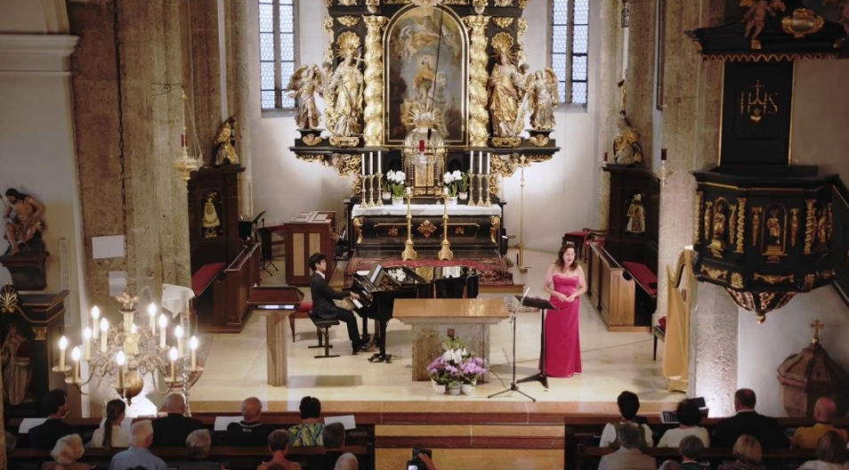
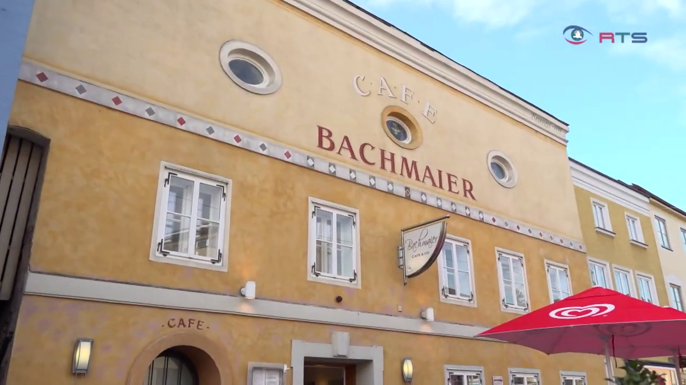
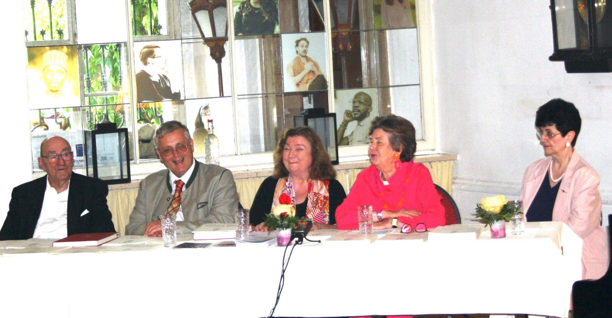
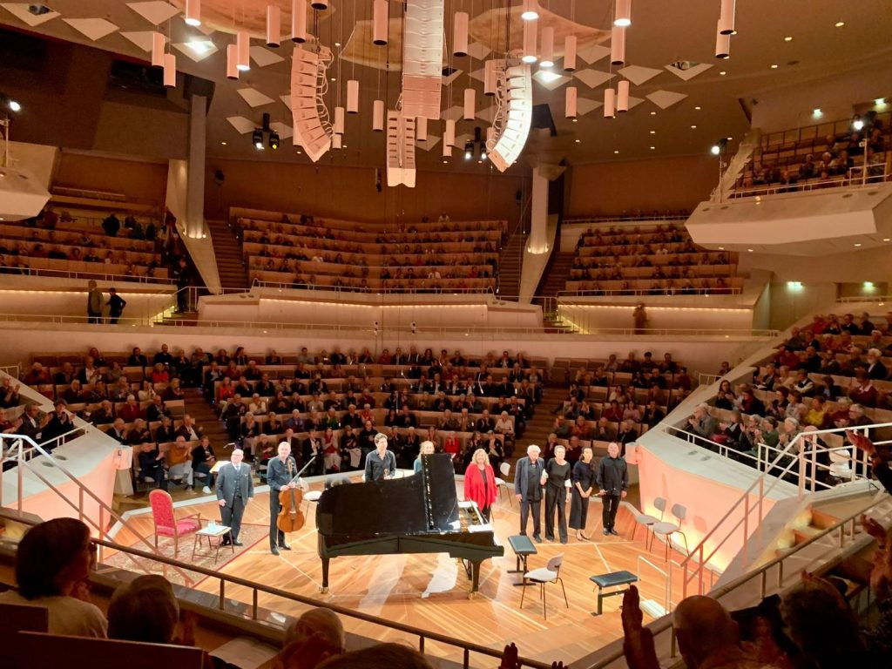
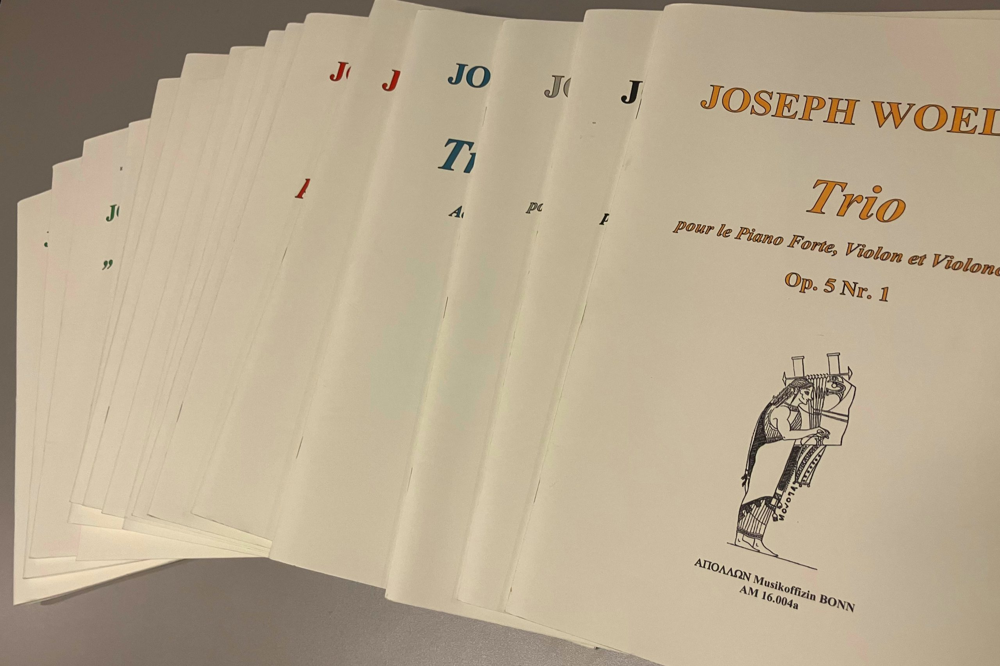
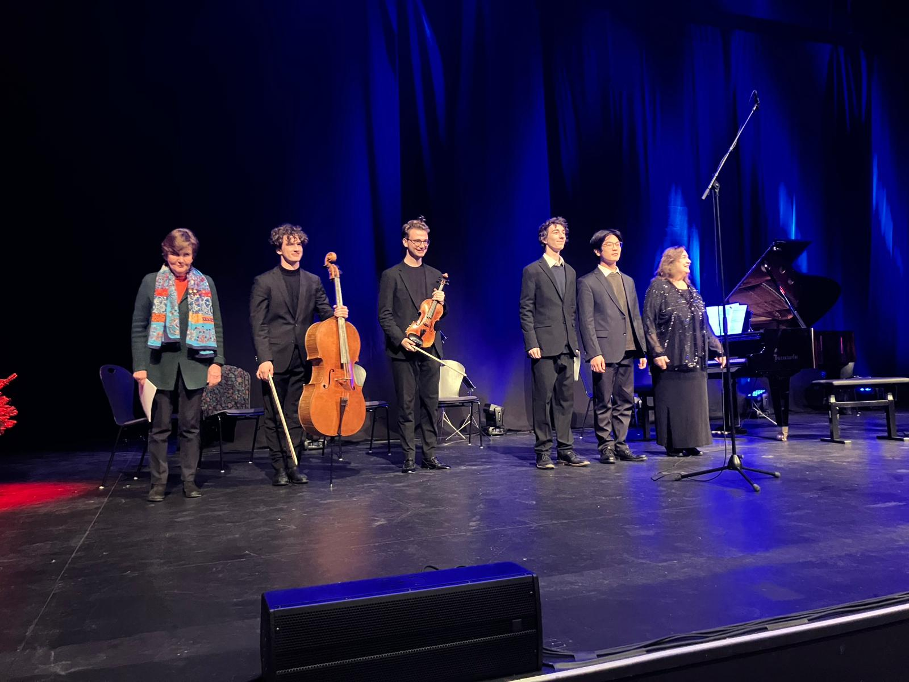
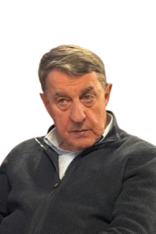
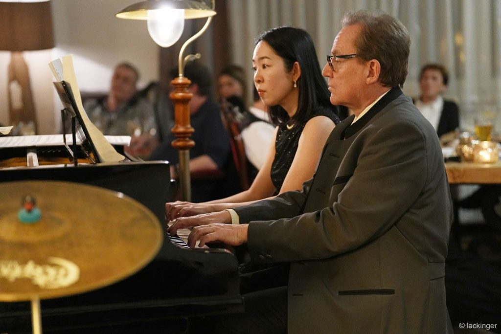

Salzburger Nachrichten
In Salzburg soll es stärker „woelfln“
Ein Bericht über die Pressekonferenz zum 250. Geburtstag in Schloss Leopoldskron.
Zum PDF-Dokument →Sitz: Straßwalchen, Salzburg (Österreich)
Geboren in Salzburg, war der Zeitgenosse von Mozart und Beethoven einer der erfolgreichsten Komponisten seiner Zeit. Er war als Komponist und Pianist unter anderem Wegbereiter von Chopin und Liszt. In seiner Wiener Zeit trat er gemeinsam mit Beethoven auf, vollzog aber hauptsächlich eine europaweite Karriere, die auf Empfehlung Mozarts in Warschau begann und ihn über Paris nach London führte, wo er zum damals bestverdienenden Komponisten weltweit avancierte.
Unsere Aufgabe ist es, Leben und Werk Joseph Woelfls (1773–1812) wieder einer breiten Öffentlichkeit bewusst zu machen. Neben Forschung, internationalen Tagungen und Konzerten werden die Werke Woelfls im angeschlossenen Verlag Apollon Musikoffizin neu herausgegeben.
Gründung der Gesellschaft in Wien durch Prof. Dr. Margit Haider-Dechant.
Beschluss der Generalversammlung zur Verlegung des Vereinssitzes von Wien nach Straßwalchen.

Erste Gala in der Pfarrkirche Straßwalchen.
Fernsehbeitrag zur Gala ansehen
Offizieller Vereinssitz im Woelfl-Haus (Café Bachmaier) in Straßwalchen.

Durchführung des VI. Internationalen Symposiums und feierliche Enthüllung der Johann-Paul-Woelfl Gedenktafel.
Fernsehbeitrag zur Enthüllung ansehen
Pressekonferenz zum 250. Geburtstag Joseph Woelfls in Schloss Leopoldskron.
Video zur Pressekonferenz ansehen
Erfolgreiches Konzert zu Ehren Joseph Woelfls in der Berliner Philharmonie.

Erscheinung der CD „Joseph Woelfl In Concert“.

Festkonzert im Mozarteum Salzburg unter dem Titel „Joseph Woelfl, der unbekannte Salzburger“.

Drei Tage im Zeichen Woelfls mit Konzerten und wissenschaftlichem Austausch.

Eröffnung der Forschungsbibliothek im Lagermarkt Straßwalchen am 31. August.

Weihnachtliches Konzert zu Ehren des 250. Geburtstags von Woelfl auf der Festspielbühne Pernerinsel in Hallein.
Fernsehbeitrag zum Konzert ansehen
Woelfl Matinee im Harnoncourt-Saal in St. Georgen im Attergau.

Präsident

Vizepräsidentin & Künstlerische Leitung

Vizepräsident

Kassier

Kassier-Stellvertreterin

Schriftführer

Schriftführer-Stellvertreter

Schriftführer-Stellvertreter

Öffentlichkeitsarbeit

Woelfl Bibliothek

Beirat

Rechnungsprüfer

Stellvertretender Rechnungsprüfer
Konzert inkl. Vorträge Musikschule Straßwalchen und Pfarrsaal.
Kammermusikabend in historischem Ambiente.
Wissenschaftliche Lecture und Konzerte zum Werk Joseph Woelfls.
Mai 2023
Eröffnung und wissenschaftliche Vorträge im Pfarrzentrum Straßwalchen.
Mai 2023
Konzert mit dem Minetti-Quartett, Werner Karlinger, Christa Ratzenböck, Fabian Egger und Johann Zhao in der Pfarrkirche Straßwalchen.
Mai 2023
Festmesse mit anschließender Enthüllung der Johann-Paul-Woelfl Gedenktafel.
Sehr geehrte Gäste!
Non plus ultra – einfach unübertrefflich. So hieß das berühmte Klavierstück Joseph Woelfls, das er 1807 in London schrieb. Unübertrefflich ist auch sein Weg, den er gegangen ist. Ein echter Europäer, dessen Wurzeln hier in Straßwalchen liegen. Die Stadt Salzburg ist stolz auf Mozart, aber wir dürfen jene nicht vergessen, die mit ihm und nach ihm die Welt der Musik geprägt haben. War er doch als Pianist, als Komponist und Musiklehrer gleichermaßen wirkmächtig und ob in Wien, Warschau, Paris oder London eine echte Berühmtheit. Nur bei uns und heute ist er eher ein Geheimtipp für Fachleute. Das soll jetzt anders werden. Das Werk Woelfls muss im allgemeinen Musik- und Konzertleben jene Bedeutung zurück erhalten, welche die Kompositionen von Wolfgang Amadeus Mozart und Michael Haydn auszeichnet. Ich bin der festen Überzeugung, dass dies Musikliebhaber und Liebhaberinnen in aller Welt genießen werden.
Es ist mir eine Ehre, als Schirmherrin dieses Symposiums und der Enthüllung der Gedenktafel für Johann Paul Woelfl fungieren zu dürfen. Möge Joseph Woelfl durch die Arbeit dieser Gesellschaft jenen Platz in der Musikgeschichte zurückerhalten, der ihm gebührt.



Ein Bericht über die Pressekonferenz zum 250. Geburtstag in Schloss Leopoldskron.
Zum PDF-Dokument →Ein umfassendes Porträt über Joseph Woelfl im Programm von Ö1.
Zum Beitrag →Bericht über den Erfolg Woelfls in Europa.
Zum Artikel →Werden Sie Teil einer internationalen Gemeinschaft, die sich der Pflege und Wiederentdeckung des musikalischen Erbes von Joseph Woelfl widmet. Unterstützen Sie Forschung, Konzerte und Publikationen und tragen Sie dazu bei, diesen bedeutenden Sohn Salzburgs wieder ins Bewusstsein der Musikwelt zu rücken.
Mitgliedsbeitrag:
Erwachsene: € 50 pro Jahr
Schüler, Studenten & Pensionisten: € 25 pro Jahr
Bitte füllen Sie das Beitrittsformular aus und senden Sie es unterschrieben per E-Mail an office@ijwg.at
Beitrittsformular herunterladenInternationale Joseph-Woelfl-Gesellschaft
Woelfl-Haus Straßwalchen (Café Bachmaier)
Salzburger Straße 6, 5204 Straßwalchen, Österreich
Email: office@ijwg.at